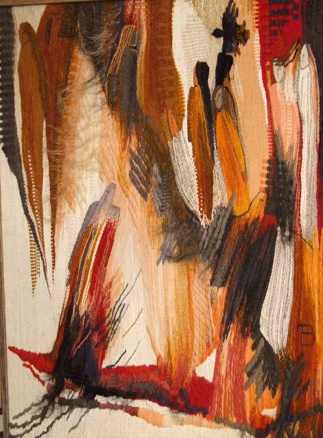
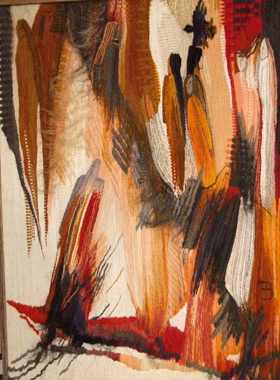

Tetiana and Mykhailo Vytiahlovski

Biography

Tetiana Vytiahlovska - she was born in Buchach in 1964 (Ternopil region). From 1975 to 1978 Tetiana studied at Buchach Art School for children.
In 1983 she finished Art Weaving Department of Vyzhnytsya College of Applied and Decorative Arts.
In 1989 Tetiana finished Art Weaving Department of Lviv Institute of Applied and Decorative Arts (now – Lviv National Art Academy).
She had personal exhibitions – in Ternopil, Kyiv, Slavutych, Lviv. Since 1995 she has been a member of the National Union of Artists of Ukraine.
- Laureate of the exhibition dedicated to 400-th anniversary of the Union of Brest (Ternopil, 1995);
- Laureate of the first prize in the International exhibition 6-th Lviv Autumn Salon "High Castle 2002";
- Laureate of regional Culture Award in the category “Visual Art named after Mykhailo Boychuk” for art project "Holiday of heaven and earth" (2015, co-authored);
- Diploma in the category “For expressive language of textile" at the 1st Ukrainian Triennial of Artistic Textile (Kiev, 2004);
- Magazine “Child’s World” award at the International exhibition 10-th Lviv Autumn Salon “High Castle 2006”;
- Certificates of honor and valuable prizes from Minister of Culture and Arts (2008, 2009, 2010, 2011, 2015, 2016 р.р.) for significant contribution to the creation of spiritual values and high professional excellence.
Tetiana lives and works in Zavodske town, Chortkiv district, Ternopil region (she works as a head of the department and a teacher at School of Arts).
Mykhailo Vytiahlovskyi - he was born in Soroky, Buchach district, Ternopil region in 1963. From 1974 to 1978 Mykhailo studied at Buchach Art School for children.

In 1982 he finished Wooden Art Department of Kosiv Technical College of Folk Crafts.
In 1990 he finished faculty “Interior and Equipment” of Lviv Institute of Applied and Decorative Arts (now – Lviv National Art Academy).
He creates modern art projects, filed with deep philosophical sense. Mykhailo works as a sculptor, but also he creates many oil and acrylic paintings.
He was a participant of many regional, national and international exhibitions. He also had his personal exhibitions in Ternopil, Kyiv, Slavutych, Lviv.
Since 1995 he has been a member of the National Union of Artists of Ukraine. Mykhailo is a winner of Lviv autumn salon “High castle 2013”.
Laureate of regional Culture Award in the category “Visual Art named after Mykhailo Boychuk” for art project "Defects of the civilization" (2015, co-authored).
Works


 



Achievements

Tetiana Vytiahlovska lives an active artistic life since the 1989: regional, Ukrainian and international exhibitions. As result exhibitions:
- Personal exhibitions in Ternopil – in 1995 and 2000.
- Personal exhibition in Slavutych – in 1996.
- Personal exhibition in Kyiv – in 1997.
- Personal exhibition in Lviv – in 2004.
- Personal exhibition in Zbarazh – in 2008.
- Regional exhibition for 400th Anniversary of Berestechko's union. Ternopil, 1995. II place (the first one wasn’t selected).
- Modern Art Exhibition and Days of Ukrainian Culture in Munich “Ukraine – 1999”.
- 6th International Exhibition: Lviv Autumn Salon “High Castle 2002”. First place for work “Exidental witnesses of somebody’s love”.
- 4th Ukrainian Exhibition of Modern Art. Ternopil, 2002.
- 7th International Exhibition: Lviv Autumn Salon “High Castle 2003”.
- Participation in annual regional exhibitions.
- 1st Ukrainian Triennial of Artistic Textile. Kiev, 2004. Diploma "For expressive language of textile" for tapestry "Night still life".
- 10th International Exhibition: Lviv Autumn Salon “High Castle 2006”. Magazine “Child’s World” award.
- 2nd Ukrainian Triennial of Artistic Textile. Kiev, 2007.
- Ukrainian Art Exhibition “Picturesque Ukraine”. Ternopil, 2007.
- 11th International Exhibition: Lviv Autumn Salon “High Castle 2007”.
- 12th International Exhibition: Lviv Autumn Salon “High Castle 2008”.
- 3rd Art In plain air “Artists about Ternopil region”. 2009.
- 13th International Exhibition: Lviv Autumn Salon “High Castle 2009”.
- 14th International Exhibition: Lviv Autumn Salon “High Castle 2010”.
- Collective Exhibition “Ternopil Artists in Lviv Art Palace”. 2012, 2013.
- 16th International Exhibition: Lviv Autumn Salon “High Castle 2012”.
- Ukrainian Exhibition of Arts and Crafts “God’s World as an Easter Day”. Ternopil, 2013.
- 2nd Ukrainian Triennial “Ukrainian Folk Modern 2012”. Chernivtsi.
- 3rd Ukrainian Triennial “Ukrainian Folk Modern 2015”. Chernivtsi.
- 19th International Exhibition: Lviv Autumn Salon “High Castle 2015”.
- Regional “Christmas” exhibition. Ternopil.
- Personal exhibition in Ternopil – in 2016.
- Personal exhibition in Chicago – in 2017.
Mykhailo Vytiahlovskyi lives an active artistic life since the 1989: regional, Ukrainian and international exhibitions. As a result exhibitions:
- Personal exhibitions in Ternopil – in 1995 and 2000.

- Personal exhibition in Slavutych – in 1996.
- Personal exhibition in Kyiv – in 1997.
- Personal exhibition in Lviv – in 2004.
- Personal exhibition in Zbarazh – in 2008.
- Modern Art Exhibition and Days of Ukrainian Culture in Munich “Ukraine – 1999”.
- 4th Ukrainian Exhibition of Modern Art. Ternopil, 2002.
- 6th International Exhibition: Lviv Autumn Salon “High Castle 2002”.
- Participation in annual regional and Ukrainian exhibitions.
- 7th International Exhibition: Lviv Autumn Salon “High Castle 2003”.
- 11th International Exhibition: Lviv Autumn Salon “High Castle 2007”.
- Ukrainian Art Exhibition “Picturesque Ukraine”. Ternopil, 2007.
- 7th Ukrainian Exhibition of Modern Art. Ternopil, 2008.
- 12th International Exhibition: Lviv Autumn Salon “High Castle 2008”.
- 3rd Art In plain air “Artists about Ternopil region”. 2009.
- Collective Exhibition “Ternopil Artists in Lviv Art Palace”. 2012, 2013.
- Ukrainian Exhibition of Arts and Crafts “God’s world as an Easter day”. Ternopil, 2013.
- 13th International Exhibition: Lviv Autumn Salon “High Castle 2009”. Diploma for work “A young miss and her old blanket”.
- 10th Ukrainian Exhibition of Modern Art. Ternopil, 2014.
- 19th International Exhibition: Lviv Autumn Salon “High Castle 2015”.
- Regional “Christmas” exhibition. Ternopil.
- Personal exhibition in Ternopil – in 2016.
- Personal exhibition in Chicago – in 2017.